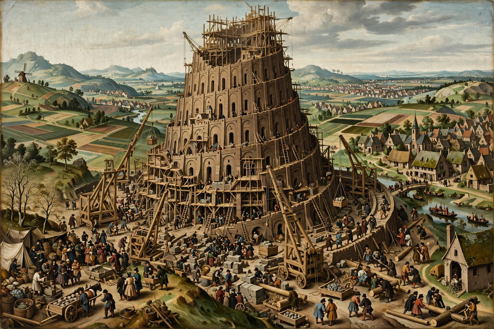

| Source | Genesis 11:1–9 |
|---|---|
| Setting | Plain of Shinar (Babylonia) |
| Themes | Origin of languages, human pride |
| Historical model | Etemenanki ziggurat, Babylon |

The Tower of Babel is an origin myth told in Genesis 11:1–9 of the Hebrew Bible. It explains the origin of the diversity of human languages: a unified humanity, speaking a single language, migrated to the land of Shinar and built a city and a tower tall enough to reach heaven. God, observing their ambition, confounded their speech so they could no longer understand one another, and scattered them over the face of the earth.
According to Genesis, the builders used baked brick and bitumen — the building technology of Mesopotamia. God says: "Come, let us go down and confuse their language there, so that they will not understand one another's speech." The city was called Babel, from a Hebrew pun on balal, "to confuse"; the name also echoes the Akkadian Bab-ilu, "gate of God".
Scholars generally connect the story with the great ziggurat of Babylon, Etemenanki, whose name means "house of the foundation of heaven and earth". Sumerian literature contains a related motif in Enmerkar and the Lord of Aratta, in which the god Enki is said to have changed the speech of mankind. The tale may reflect Judahite experience of Babylon during and after the exile.
The Tower of Babel has inspired art for two millennia, most famously Pieter Bruegel the Elder's two paintings (1563), which depict a vast spiral structure modelled on the Roman Colosseum. The story remains a common metaphor for grandiose but doomed projects and for the fragmentation of human communication.
See also: Etemenanki · Genesis creation narrative · Atrahasis